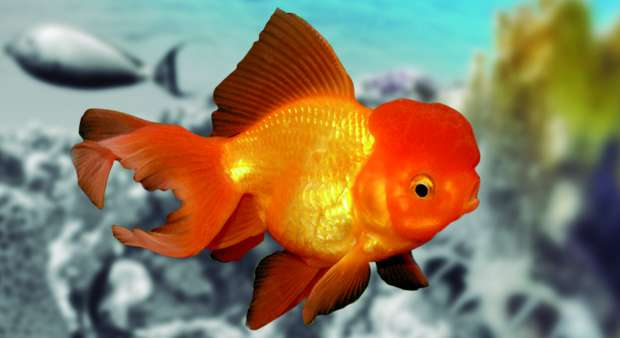
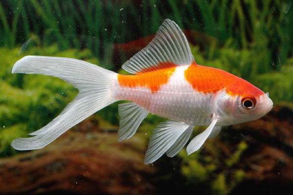
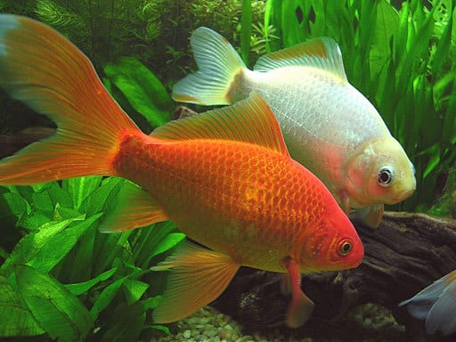
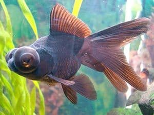

longitud de su cuerpo puede alcanzar los 20 centímetros, aunque normalmente varía entre 15 y 18 centímetros. Su cuerpo es de forma redondeada, con una ligera curvatura en la espalda, lo que provoca que su forma de nadar sea un poco lenta. En cuanto a sus aletas, se distribuyen de la siguiente manera:
Par de aletas pectorales: a cada lado, justo después de su “melena”
Par de aletas anales: parte inferior del cuerpo
Una aleta caudal: cola.
Una aleta anal: antes de la cola.
Cometa

Este pez es comparado en numerosas ocasiones con otros peces de acuarios. Su tamaño es bastante menor al resto e incluso si lo comparamos con otros ejemplares de la misma familia. Se puede decir que el tamaño va variando dependiendo de las condiciones en las que habita y el tipo de alimentación que tiene. Sin embargo, por lo general, su tamaño es de menos de 10 centímetros. El peso ideal de estos peces es de media libra.
Pez Dorado

El pez dorado (conocido en inglés como goldfish) también conocido como tres colas, carpa dorada o carpín dorado, es la versión doméstica de la carpa de río china (Carassius auratus), una especie de pez de agua dulce de la familia Cyprinidae. Se empezó a criar en cautividad hace unos 2000 años, siendo una de las especies de pez domésticas más antiguas y actualmente es el líder de acuario en agua fría y dulce.
La cría en cautividad, como en cualquier especie, conlleva que el animal cambie su forma de vida y, por tanto, la adaptación a esta también produce cambios físicos en los peces dorados, que seleccionados a lo largo de los años, han dado lugar a la gran variedad que se puede ver hoy día.
Pez Telescopico

Dentro de la familia de los carácidos , existe una variedad de peces, bastante peculiar y curiosa, que tiene ojos modificados denominada como telescopios o Demekin. Esta variedad, se originó en China a principios del siglo XVIII, y su característica principal son sus ojos, los cuales parece que brotaran de su cabeza, es decir sobresalen de tal manera que se proyectan hacia fuera. Sin embargo, aunque adquieren el nombre de peces telescopio, su visión es muy limitada.
Estos peces se encuentran en infinidad de acuarios y peceras de todo el mundo. Este pez ha sido domesticado por el ser humano criado con fines ornamentales. Cada vez, con el paso de los años, las crías se han ido volviendo más selectiva, dando las variedades que tenemos hoy día.